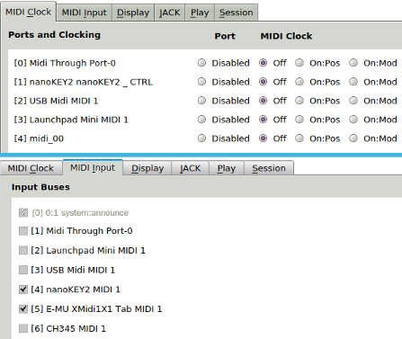

|
The first startup of Seq66 makes default settings,
and creates the configuration files when Seq66 exits.
Now is a good time to make sure the desktop theme, the
Qt theme, qss style-sheet, and the
palette all come together for a nice look.
See the user's manual for details.
|
-
Ports.
This diagram shows the MIDI port
setups on Linux using the ALSA engine (the
default). It will look different if JACK is used, or
if running in Windows.
The top section is "Clocks" (MIDI-out ports),
with enabled ports set to "Off".
The bottom section is "Input" (MIDI-in ports);
check-marked ports are enabled for recording.
-
JACK.
Running
qseq66 --jack or setting
JACK in Preferences / JACK) requires
using a2jmidid or a recent version
of JACK to expose USB MIDI ports to
JACK.
-
Windows.
Running
qpseq66.exe might show an
error; the
Microsoft MIDI Mapper has grabbed the port(s).
See the manual or
C:/Program Files/Seq66/data/ readme.windows.
-
First Exit.
At exit, Seq66 saves the current settings
in the files shown here.
-
Smoke Test.
Load a demo file like
Peter Gunn - reconstructed.midi
in /usr/local/share/seq66-0.99/midi/
(Linux) or
C:/Program Files/Seq66/data/midi.
(Windows).
Go to the "None" drop-down box at
the top and select the desired output (hardware/software
synthesizer).
Click the "Play" button and verify that it
smokes (plays)!
|
If not, try trouble-shooting;
if that fails, ask us! Save the song with this
output for later demos.
|

|
|
Output Ports ("Clocks") and Input Ports
|
|